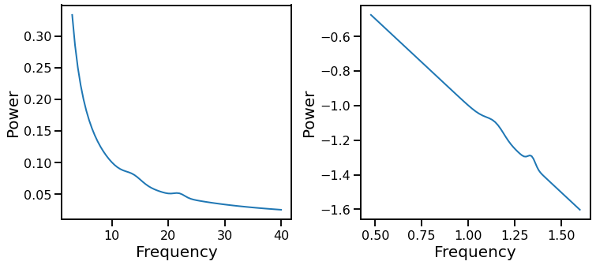

Running Spectral Fitting¶
Fitting spectral methods on simulated power spectra.
%matplotlib inline
import numpy as np
import pandas as pd
import matplotlib.pyplot as plt
from scipy.stats.mstats import normaltest
from fooof.sim import gen_power_spectrum, gen_group_power_spectra
# Import custom code
import sys; from pathlib import Path
sys.path.append(str(Path('..').resolve()))
from apm.fit import *
from apm.fake import SimFits, print_res
from apm.plts import plot_psds, plot_psds_two
from apm.plts.utils import color_red_or_green
from apm.core.db import APMDB
from apm.core.io import save_pickle, load_pickle
from apm.sim.peaks import *
Editorial Note¶
Still some work to do here to check the simulation code and make sure everything is updated properly.
# OLD:
from apm.sim.peaks import _check_duplicate
CEN_FREQS = np.load('/Users/tom/Documents/GitCode/AperiodicMethods/apm/sim/data/freqs.npy')
PROBS = np.load('/Users/tom/Documents/GitCode/AperiodicMethods/apm/sim/data/probs.npy')
def gen_osc_def(n_oscs=None):
"""Generate a plausible oscillation distribution for a synthetic PSD.
Parameters
----------
n_oscs : int, optional
Number of oscillations to generate. If None, picked at random. Default: None.
Returns
-------
oscs : list of list of [float, float, float], or []
Oscillation definitions.
"""
#
if n_oscs is None:
n_oscs = np.random.choice([0, 1, 2], p=[1/3, 1/3, 1/3])
# Initialize list of oscillation definitions
oscs = []
# Define the power and bandwidth possibilities and probabilities
pow_opts = [0.05, 0.10, 0.15, 0.20]
pow_probs = [0.25, 0.25, 0.25, 0.25]
bw_opts = [1, 1.5, 2]
bw_probs = [1/3, 1/3, 1/3]
# Generate oscillation definitions
for osc in range(n_oscs):
cur_cen = np.random.choice(CEN_FREQS, p=PROBS)
while _check_duplicate(cur_cen, [it[0] for it in oscs]):
cur_cen = np.random.choice(CEN_FREQS, p=PROBS)
cur_amp = np.random.choice(pow_opts, p=pow_probs)
cur_bw = np.random.choice(bw_opts, p=bw_probs)
oscs.append([cur_cen, cur_amp, cur_bw])
return oscs
Setup & Settings¶
# Set up project database object
db = APMDB()
# General simulation settings
f_range = [3, 40]
off_val = 0
noise = 0.0
Check out PSD generation and test fitting¶
# Generate a single simulated test power spectrum
exp_val = 1
peak_gen = gen_peak_def()
peaks = next(peak_gen)
# Old version
fs, psd = sim_psd(f_range, exp_val, peaks, noise)
# Plot and check a simulated spectrum, plotted in semi-log and log space
plot_psds_two(fs, psd, np.log10(fs), np.log10(psd))
# Simulate an example power spectrum
fs, psd = gen_power_spectrum(f_range, [off_val, exp_val], peaks, noise)
# Plot and check a simulated spectrum, plotted in semi-log and log space
plot_psds_two(fs, psd, np.log10(fs), np.log10(psd))

# Test out fits
print('True exponent value is ', str(exp_val), '\n')
print('OLS fit: \t', fit_ols(fs, psd))
print('RLM fit: \t', fit_rlm(fs, psd))
print('RLM-EA fit: \t', fit_rlm_alph(fs, psd))
print('RLM-EO fit: \t', fit_rlm_oscs(fs, psd))
print('RAN fit: \t', fit_ransac(fs, psd))
print('RAN-EA fit: \t', fit_ransac_alph(fs, psd))
print('RAN-EO fit: \t', fit_ransac_oscs(fs, psd))
print('EXP fit: \t', fit_exp(fs, psd))
print('EXP-EA fit: \t', fit_exp_alph(fs, psd))
print('EXP-EO fit: \t', fit_exp_oscs(fs, psd))
print('FOOOF fit: \t', fit_fooof(fs, psd))
True exponent value is 1
OLS fit: -1.0033812568656857
RLM fit: -1.0006323377358153
RLM-EA fit: -1.0001652080596204
RLM-EO fit: -1.0000017151081606
RAN fit: -1.0033812568656857
RAN-EA fit: -1.0031025599698833
RAN-EO fit: -1.0003220896839073
EXP fit: -1.0033812574602508
EXP-EA fit: -1.0031025608166226
EXP-EO fit: -1.0003220905128827
FOOOF fit: -1.0001338625412473
Run a Fits on Simulated Power Spectra¶
# Settings
n_psds = 50
f_range = [3, 40]
exp_val = 1
noise = 0.05
# NEW VERSION.
freqs, psds, sim_params = gen_group_power_spectra(\
n_psds, f_range, [off_val, exp_val], gen_peak_def(), noise, return_params=True)
# Plot example simulated power spectrum from the group
plot_psds(freqs, psds[10, :])
# OLD: Simulate a group of PSDs
freqs, psds = sim_n_psds(n_psds, f_range, exp_val, gen_osc_def, noise)
plot_psds(freqs, psds[:, 10])
# # Check out some of the simulated power spectra
# for ind, psd in enumerate(psds.T):
# if ind < 5:
# plt.figure()
# plt.plot(freqs, psd)
# Initialize and set up for simulated data testing
sims = SimFits()
sims.get_fit_funcs()
# Check the fitting functions being used
print(list(sims.fit_funcs.keys()))
['OLS', 'OLS-EA', 'OLS-EO', 'RLM', 'RLM-EA', 'RLM-EO', 'RAN', 'RAN-EA', 'RAN-EO', 'EXP', 'EXP-EA', 'EXP-EO', 'FOOOF']
# Fit spectra: this fits all methods
sims.fit_spectra(exp_val, freqs, psds)
# Calculate metrics
avgs = sims.calc_avg_errs()
perc_good = sims.calc_perc_good()
# Check errors per fitting method
print('AVERAGE FIT ERRORS')
print_res(avgs)
AVERAGE FIT ERRORS
RAN 0.01631
RLM-EO 0.02156
OLS-EO 0.02282
EXP-EO 0.02282
FOOOF 0.02331
RLM 0.02386
RAN-EO 0.02607
RLM-EA 0.02644
OLS-EA 0.02734
EXP-EA 0.02734
RAN-EA 0.02895
OLS 0.02906
EXP 0.02906
# Check errors per fitting method
print('PERCENTAGE FITS BELOW ERROR THRESHOLD')
print_res(perc_good)
PERCENTAGE FITS BELOW ERROR THRESHOLD
RAN 0.60000
FOOOF 0.56000
RLM-EO 0.54000
RLM 0.54000
OLS-EO 0.54000
EXP-EO 0.54000
RLM-EA 0.48000
RAN-EO 0.48000
OLS 0.48000
EXP 0.48000
RAN-EA 0.46000
OLS-EA 0.44000
EXP-EA 0.44000
#
df = pd.DataFrame(sims.errs)
# Check the correlation structure between fit erros
df.corr()
| OLS | OLS-EA | OLS-EO | RLM | RLM-EA | RLM-EO | RAN | RAN-EA | RAN-EO | EXP | EXP-EA | EXP-EO | FOOOF | |
|---|---|---|---|---|---|---|---|---|---|---|---|---|---|
| OLS | 1.000000 | 0.643093 | 0.210546 | 0.918442 | 0.572122 | 0.175599 | 0.644432 | -0.108848 | 0.080234 | 1.000000 | 0.643093 | 0.210546 | 0.436796 |
| OLS-EA | 0.643093 | 1.000000 | 0.263324 | 0.602124 | 0.888575 | 0.262357 | 0.573546 | -0.050512 | 0.083468 | 0.643093 | 1.000000 | 0.263324 | 0.403284 |
| OLS-EO | 0.210546 | 0.263324 | 1.000000 | 0.297150 | 0.488060 | 0.981551 | 0.542989 | -0.078459 | 0.530920 | 0.210546 | 0.263324 | 1.000000 | 0.749639 |
| RLM | 0.918442 | 0.602124 | 0.297150 | 1.000000 | 0.610150 | 0.272509 | 0.799291 | -0.117162 | 0.112791 | 0.918442 | 0.602124 | 0.297150 | 0.527146 |
| RLM-EA | 0.572122 | 0.888575 | 0.488060 | 0.610150 | 1.000000 | 0.492970 | 0.718926 | -0.067759 | 0.222590 | 0.572122 | 0.888575 | 0.488060 | 0.573173 |
| RLM-EO | 0.175599 | 0.262357 | 0.981551 | 0.272509 | 0.492970 | 1.000000 | 0.535027 | -0.080089 | 0.523772 | 0.175599 | 0.262357 | 0.981551 | 0.710450 |
| RAN | 0.644432 | 0.573546 | 0.542989 | 0.799291 | 0.718926 | 0.535027 | 1.000000 | -0.066922 | 0.254887 | 0.644432 | 0.573546 | 0.542989 | 0.731605 |
| RAN-EA | -0.108848 | -0.050512 | -0.078459 | -0.117162 | -0.067759 | -0.080089 | -0.066922 | 1.000000 | -0.155701 | -0.108848 | -0.050512 | -0.078459 | 0.030796 |
| RAN-EO | 0.080234 | 0.083468 | 0.530920 | 0.112791 | 0.222590 | 0.523772 | 0.254887 | -0.155701 | 1.000000 | 0.080234 | 0.083468 | 0.530920 | 0.307172 |
| EXP | 1.000000 | 0.643093 | 0.210546 | 0.918442 | 0.572122 | 0.175599 | 0.644432 | -0.108848 | 0.080234 | 1.000000 | 0.643093 | 0.210546 | 0.436796 |
| EXP-EA | 0.643093 | 1.000000 | 0.263324 | 0.602124 | 0.888575 | 0.262357 | 0.573546 | -0.050512 | 0.083468 | 0.643093 | 1.000000 | 0.263324 | 0.403284 |
| EXP-EO | 0.210546 | 0.263324 | 1.000000 | 0.297150 | 0.488060 | 0.981551 | 0.542989 | -0.078459 | 0.530920 | 0.210546 | 0.263324 | 1.000000 | 0.749639 |
| FOOOF | 0.436796 | 0.403284 | 0.749639 | 0.527146 | 0.573173 | 0.710450 | 0.731605 | 0.030796 | 0.307172 | 0.436796 | 0.403284 | 0.749639 | 1.000000 |
# Plot data distributions and inter-relations
pd.plotting.scatter_matrix(df, figsize=[16, 12]);
# Apply a normal test across fit-error distributions
normalities = df.apply(normaltest)
# Check which results of normal test
nt_df = pd.DataFrame([data[1] for data in normalities.values], index=normalities.index)
nt_df.style.applymap(color_red_or_green)
| 0 | |
|---|---|
| OLS | 0.016168 |
| OLS-EA | 0.000001 |
| OLS-EO | 0.000001 |
| RLM | 0.001976 |
| RLM-EA | 0.000000 |
| RLM-EO | 0.000001 |
| RAN | 0.000000 |
| RAN-EA | 0.000000 |
| RAN-EO | 0.000000 |
| EXP | 0.016168 |
| EXP-EA | 0.000001 |
| EXP-EO | 0.000001 |
| FOOOF | 0.002250 |
# Save out simulated fit data to pickle
save_pickle(sims.errs, 'SimFits_test.p', db.sims_path)
# Check available simulated fit results files
sim_files = db.check_files('sims')
f_ind = sim_files.index('SimFits_test.p')
# Load simulated fit results data from pickle file
data = load_pickle(sim_files[f_ind], db.sims_path)
sim_dat = SimFits()
sim_dat.errs = data